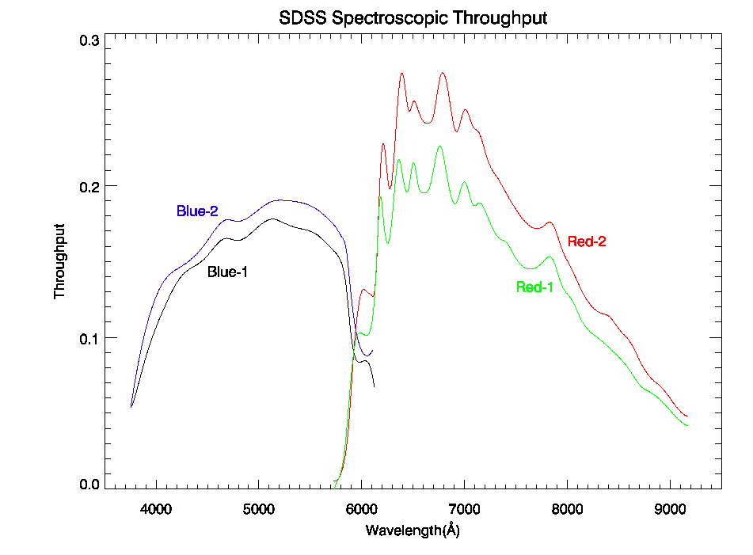

Each spectrographic exposure collects spectra from 640 points on the focal plane, most of them corresponding to objects. An aluminum plate with holes drilled at the desired locations fixes the points from which spectra will be gathered. When prepared for observation, this plate (usually called a plug plate) is mounted on a cartridge that can be quickly mounted and dismounted from the telescope. Optical fibers plugged into the holes in the plate carry light from the focal plane to slitheads attached to the cartridge. Each of the two slitheads accept light from 320 of the total of 640 optical fibers, and correspond to a spectrograph permanently mounted on the back of the telescope. Mounting a cartridge on the telescope brings the plug plate to Cassegrain focus and mates each slithead to its corresponding spectrograph. Each of the two spectrographs collect spectra on 2 SITe/Tektronix 2048 by 2048 CCDs, one covering a wavelength range of 3800 Å to 6100 Å, and the other from 5900 Å to 9100 Å.
A detailed description of the spectrographs can be found in the technical summary and in the project book. This page summarizes the most important information needed to understand the data it produces.
| CCDs | 4, 2048 × 2048, SITe/Tektronix, 49.2mm square |
| Channels | 3800-6150Å (blue), 5800-9200Å (red) |
| Number of fibers | 320 × 2 |
| Fiber diameter | 3" |
| Wavelength calibration | Hg, Cd, and Ne arc lamps, rms error of 0.07 pixels (10 km/s) |
| Flat field | quartz lamps |
| Flux calibration | Standard stars in each field, tied to colors observed with the imaging camera |
| Pixel size | 69 km/s |
| Spectral resolution | ranges from 1850 to 2200 |
| Integration time | Exposures are taken until the cumulative mean S/N per pixel exceeds 4 for a fiducial fiber magnitude of g = 20.2 and i = 19.9, typically 3 exposures of 15 minutes each under good conditions. |
